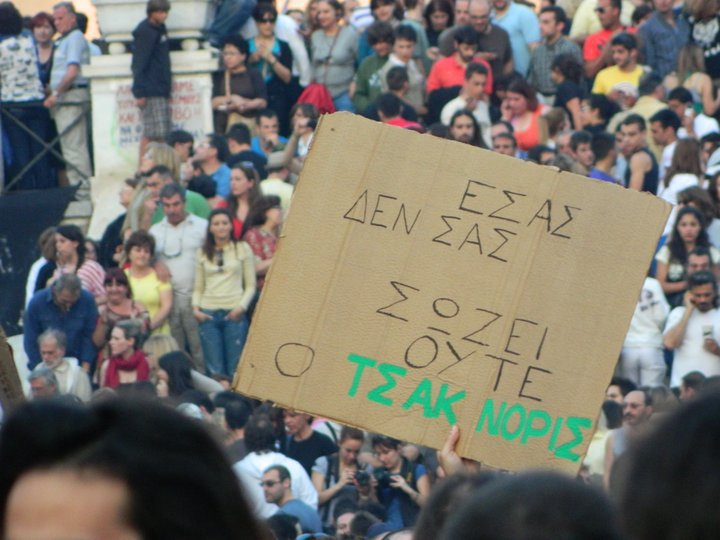

Πρωτοπόρος ο Παπανδρέου, καταργεί το οκτάωρο που έχει θεσπιστεί απο το 1886 και μειώνει τους μισθούς.......Δέκα και δώδεκα ώρες δουλειά ανάλογα με τα κέφια του αφεντικού, και μισθός μέχρι 500 eu...... :
«Κλείδωσαν» τα νέα μέτρα για τα εργασιακά και το ασφαλιστικό, που θα συμπεριληφθούν στο μεσοπρόθεσμο πρόγραμμα της κυβέρνησης.
Μετά από συνεργασία που είχε χθες η υπουργός Εργασίας και Κοινωνικής Ασφάλισης, Λούκα Κατσέλη με τον πρόεδρο του Συμβουλίου Οικονομικών Εμπειρογνωμόνων, Γιώργο Ζαννιά, οριστικοποιήθηκαν τα ακόλουθα μέτρα:
- Η δυνατότητα για νεοεισερχόμενους στην αγορά εργασίας 18 - 25 ετών για μειωμένες κατά 20% αποδοχές από το όριο της Εθνικής Γενικής Συλλογικής Σύμβασης Εργασίας.
- Η διευθέτηση του χρόνου εργασίας σε εξάμηνη βάση, με ενίσχυση του διευθυντικού δικαιώματος και χωρίς να υπάρχει σύμφωνη γνώμη των εργαζομένων, καταργώντας ουσιαστικά τις υπερωρίες.
- Η επιμήκυνση των συμβάσεων ορισμένου χρόνου, από δύο σε τρία χρόνια, με δυνατότητα ανανέωσης τρεις φορές.
Τα μέτρα θα θεσπισθούν με νομοθετικές ρυθμίσεις που θα προωθηθούν άμεσα.
Στο μεταξύ εχτές στη συγκέντρωση στην πλατεία Συντάγματος, μαζεύτηκαν πάνω από 50.000 αγανακτισμένοι ενώ για πρώτη φορά μετά από μια εβδομάδα είχαμε και μικροεπεισόδια.
Η ένταση προκλήθηκε όταν μια ομάδα περίπου 200 διαδηλωτών «γλίστρησε» ανάμεσα και πίσω από τις αστυνομικές κλούβες, που παρατάσσονται κάθε βράδυ στην αρχή της Β. Σοφίας, και απέκλεισε την είσοδο της Βουλής, πριν οι αστυνομικές δυνάμεις προλάβουν να αντιδράσουν. Όταν η Αστυνομία κατάλαβε τί είχε συμβεί, οι διαδηλωτές είχαν ήδη φθάσει πολύ κοντά στο φυλάκιο της Β. Σοφίας και οι περισσότεροι είχαν ήδη καθήσει οκλαδόν. Κάποιοι αστυνομικοί επιχείρησαν να κινηθούν εναντίον τους, πήραν όμως εντολή να μη χρησιμοποιήσουν βία αλλά –αντιθέτως- να λειτουργήσουν κατευναστικά, μια και υπήρχε πολύ σοβαρό ενδεχόμενο, με τόσες χιλιάδες συγκεντρωμένων, τα επεισόδια να γενικευτούν.
Μέσα στη Βουλή, όταν έγινε γνωστό το τί συμβαίνει έξω, επικράτησε έντονη ανησυχία και αναστάτωση. Με φακούς και μέσα από τον Εθνικό Κήπο φυγαδεύτηκαν χθες το βράδυ τουλάχιστον 20 βουλευτές εξαιτίας του αποκλεισμού της Βουλής από διαδηλωτές. Φυγαδεύτηκαν με τη συνοδεία αστυνομικών και πυροσβεστών που κρατούσαν φακούς από την πίσω πόρτα που οδηγεί στον Εθνικό Κήπο. Πρώτος έφυγε ο βουλευτής του ΛΑΟΣ Μ. Βορίδης και στη συνέχεια ακολούθησαν άλλοι βουλευτές και υπάλληλοι.
Ο πρόεδρος της Βουλής Φίππος Πετσάλνικος ζήτησε επιπλέον αστυνομική προστασία κι έτσι λίγο πριν τα μεσάνυχτα οι εναπομείναντες βουλευτές άρχισαν να αποχωρούν, αφού προηγουμένως είχε σχηματισθεί αστυνομικός κλοιός προστασίας τους.
Όπως αναμενόταν, όταν έγιναν αντιληπτοί από τους συγκεντρωμένους, οι αποδοκιμασίες κορυφώθηκαν και τα συνθήματα «κλέφτες, κλέφτες», «πάρτε το μνημόνιο και φύγετε από δω» (ιδιαίτερα δημοφιλή, κάθε βράδυ στο Σύνταγμα) δονούσαν πλέον την ατμόσφαιρα. Μερικοί διαδηλωτές επιχείρησαν να κινηθούν προς το μέρος των βουλευτών αλλά απωθήθηκαν. Όχι όμως και μια ηλικιωμένη κυρία που με την τσάντα της κατάφερε να χτυπήσει μερικά βουλευτικά αυτοκίνητα...
Κι όμως χθες η Βουλή είχε την μεγαλύτερη αστυνομική προστασία, σε σχέση με τις προηγούμενες μέρες. Ήταν παρατεταγμένες, όχι μια και δυό αλλά 12 κλούβες!..
| |
3 σ χ ό λ ι α :
|
οι δουλοπαρικοι δουλευαν απο την ανατολη μεχρι τη δυση του ηλιου. το χειμωνα δηλαδη δουλευαν πολυ λιγοτερο απ οτι θα δουλευουμε εμεις αυριο, κ ειχαν τουλαχιστον σιγουρη δουλεια, στεγη κ τροφη. |
|
καλό είναι, δε λέω, που τρόμαξαν επιτέλους μέσα στο μπουρδελοκοινοβούλιο, αλλά καλό είναι να είμαστε και προσεχτικοί στους τυχόν προβοκάτορες... |
|
afta ta sxolia giati den ta svineis re?aa nai pelates einai,sorry. |
νέο σχόλιο:
|
35 readers online
|